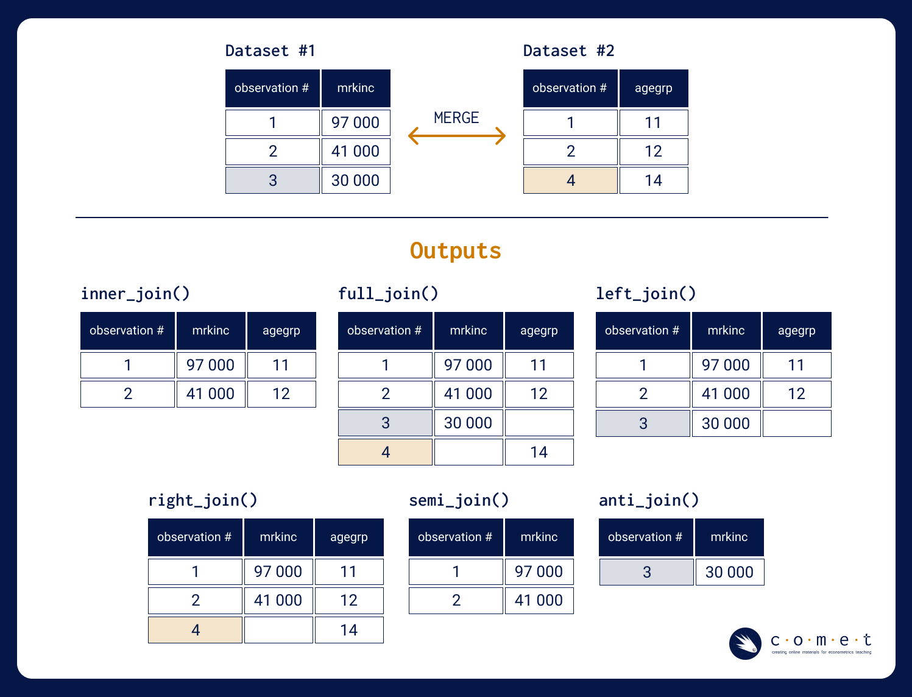

# run this cell
source("getting_started_intro_to_data_tests_2.r")
# loading in our packages
library(tidyverse)
library(haven)0.3.2 - Introduction to Data in R - Part 2
introduction
getting started
R
data
tidyverse
data cleaning
tables
data wrangling
missing values
merging data
An introduction to analyzing data using tidyverse and dplyr in R including workflows for loading, merging, cleaning and visualizing data.
Outline
Prerequisites
- Introduction to Data in R - Part 1
Learning Outcomes
In this notebook, you will learn about:
- Filtering, segmenting, combining and cleaning datasets with
tidyverseand base R - Reshaping and presenting data in different kinds of formats
References
Part 1: Data Cleaning
The World Development Indicators (WDI) is the primary World Bank collection of development indicators, compiled from officially recognized international sources.
We have used the World Bank’s DataBank applet to select and import some macro and development-related time series data for the countries Canada, India, Mexico, South Africa, and Zimbabwe for years 2014-2022.
# importing required packages
library(readr)
library(dplyr)
library(tidyr)
library(stringr)
#Loading the CSV file using the URL
file_path <- "datasets/WDI_raw.csv"
wdi <- read_csv(file_path) %>%
rename(Series_Code = "Series Code", Series_Name = "Series Name",
Country = "Country Name", Country_Code = "Country Code")
head(wdi, 10)dim(wdi)The data frame is in long format. Each unique value in Series_Name is an entry for a row, and not a column. As an example:
| Country | Year | Var | Value |
|---|---|---|---|
| Canada | 2017 | Var A | Value |
| Canada | 2017 | Var B | Value |
| Canada | 2018 | Var C | Value |
| Canada | 2018 | Var B | Value |
| Canada | 2018 | Var C | Value |
A simpler version of the data frame in a wide-format could look like this:
| Country | Year | Var A | Var B | Var C |
|---|---|---|---|---|
| Canada | 2017 | Value | Value | Value |
| Canada | 2018 | Value | Value | Value |
Note: look up the functions
pivot_wider()andpivot_longer()to learn how to switch between long and wide formats.
While Series_Name contains descriptions for each of the series in the data frame, Series_Code offers a handy way to group variables.
Our Series_Code variable follows a taxonomy system. For example, any code starting with AG belongs to a family of series related to the state of agriculture in that country. Let’s see the unique series families and their sub series names.
Series_Families <- wdi %>%
mutate(Series_Family = substr(`Series_Code`, 1, 2)) %>% # substring first two characters
group_by(Series_Family) %>% # group by unique vals
summarize(Series_Names_Under_Family = paste(unique(`Series_Name`), collapse = ", ")) # for each family, find and paste all `Series_Name`
head(Series_Families, 13)Let’s create a data frame with series families related to access to institutions. Those are grouped under SE (Schooling), FX (Financial Institutions) and EG (Electricity). Let’s call our dataset access_wdi.
prefixes <- c("SE", "EG", "FX")
access_wdi <- wdi %>%
filter(str_detect(`Series_Code`, str_c("^", prefixes, collapse = "|")))
access_wdi <- access_wdi %>%
rename_with(~str_extract(., "\\d{4}"), starts_with("20")) # rename year columns to follow the 2XYZ format.
head(access_wdi, 5)Handling missing values
We are interested in seeing if there are any specific years for when the data was not collected or is missing for most of the variables/series.
Let’s look at each of the year columns and count the number of rows with NA.
year_columns <- c("2018", "2019", "2020", "2021", "2022")
missing_counts <- sapply(year_columns, function(column) sum(is.na(access_wdi[[column]]))) # create custom function to count missing values
print(missing_counts / nrow(access_wdi))Looks like 98% of the data is missing for the year 2022. It probably makes sense to drop the 2022 column altogether.
access_wdi <- access_wdi %>%
select(-`2022`)
head(access_wdi, 20)Now let’s check for missing values row-wise - whether there are lots of NAs for a country-series combination. Let’s check if there are any particular country-series combination for which the data is missing for more than 2 years.
# create new column with NA count by columns for each row
access_wdi$count_na <- rowSums(is.na(access_wdi))
# sort by number of missing vals
access_wdi <- access_wdi %>%
arrange(desc(count_na))
select(access_wdi, c("Country_Code", "Series_Code", "count_na"))This data frame shows that we don’t have any data for series beginning with the SE (Schooling) prefix.
Think Deeper: how could you be systematic when choosing whether to drop or not NA values? Our panel dataset is indexed by country and series, and we’re interested in yearly values over time. Think about the options we have to drop NAs: (1) Dropping a series altogether (2) Dropping specific countries (3) Dropping specific rows (i.e., country-series pairs)…
Let’s create an array with Series_Code to be dropped from our dataset.
# creating an array of `Series_Code` that need to be dropped from access_wdi
to_drop <- access_wdi %>%
filter(count_na > 2) %>%
distinct(Series_Code) %>% unique()
to_drop <- unlist(to_drop, use.names = FALSE)
to_dropThink Deeper: what if dropping the missing values leads to low sample size issues? One approach is to import data from alternative sources and fill them into our original data set. This topic is beyond the scope of this notebook, but think about the implications of filling in data to the study.
Let’s now drop all the rows where Series_Code matches any of the codes in to_drop, and save the resulting data frame as a new version of access_wdi.
filtered_access_wdi <- access_wdi %>%
filter(!(Series_Code %in% to_drop))
filtered_access_wdiNow the only variables left in this data frame are the EG variables, which indicate the levels of access to electricity and other power sources within the countries.
This dataset is clearly not appropriate to answer questions about overall access to institutions; however, it could be extremely useful if the scope of the research is narrowed to access to power utilities. For example, we could use the dataset to visualize the growth in access to energy across the countries over the last 5 years.
Test your knowledge
Before you complete the following exercises, take a moment to review the section above. Are there any functions you’re not familiar with? Now is a good time to learn them.
Note: by running
?function_nameyou can get a detailed description of any of the functions used in this notebook.
What are some possible ways to deal with NA values? Select all that apply
- Drop them row-wise
- Drop them column-wise
- Fill them in
- Change the scope of the research
# Enter your answer as a string (in alphabetical order) with your answer choices ex: "ACD"
answer_1 <-
test_1()What is normally the best way to deal with missing data?
- Drop them row-wise
- Drop them column-wise
- Fill them in
- Change the scope of the research
- Impossible to tell
# Enter your answer as either "A", "B", "C", "D", or "E"
answer_2 <-
test_2()Part 2: Merging data frames in R
Now let’s take a step back and consider an example of merging data frames. Our WDI data set has macro information on national incomes, CABs, Bank Capital to Assets Ratios, and various kinds of CPIA ratings. Let’s extract that data and merge it with data from the Quarterly Public Debt (QPD) database. The QPD is exactly what you think it is: a record of sovereign debt managed by the World Bank and the International Monetary Fund (IMF).
First, to our wdi dataset.
# identify the relevant series families
prefixes <- c("NY", "FD", "FB", "IQ", "BN")
# subset `wdi` and create `macro_wdi`
macro_wdi <- wdi %>%
filter(str_detect(`Series_Code`, str_c("^", prefixes, collapse = "|"))) %>%
rename_with(~str_extract(., "\\d{4}"), starts_with("20"))
macro_wdiAgain, take note of the missing values! It’s sad that we’re missing the CPIA rating variables (starting with IQ) for all the countries (Canada, India, Mexico, South Africa and Indonesia). Let’s drop the CPIA rows.
macro_wdi <- macro_wdi %>%
filter(!(Series_Code %in% c('IQ.CPA.FINS.XQ', 'IQ.CPA.FISP.XQ', 'IQ.CPA.MACR.XQ', 'IQ.CPA.PROP.XQ', 'IQ.CPA.PROT.XQ', 'IQ.CPA.DEBT.XQ', 'IQ.CPA.TRAD.XQ')))
c(macro_wdi$Series_Code %>%
unique(), macro_wdi$Series_Name %>%
unique())So these are the variables we’ll include from the WDI data frame! Now, let’s load the QPD dataset.
file_path_2 <- "datasets/qpd.csv"
qpd <- read_csv(file_path_2) %>%
rename(Series_Code = "Series Code", Series_Name = "Series Name",
Country = "Country Name", Country_Code = "Country Code")
head(qpd, 25)The series data in QPD is stored on a quarter-by-year basis. We can aggregate the data column-wise to get yearly amounts.
Note: R usually throws an error if you’re telling it to sum over certain rows/columns that include NA values. We resolve this by setting the parameter
na.rm = TRUE, which literally means “NA remove is TRUE”.
Before we aggregate the data, let’s check the number of periods for which data is missing. Again, we’ll look at the country-series combinations. We do that below with a loop, telling R to manually go over each unique row, count the number of NAs along the period columns, and then store the result in another data frame called status.
status <- data.frame() # empty data frame that is placeholder for the final data
Series_Codes <- qpd$Series_Code %>% unique() # gets all `Series_Codes` to iterate over
Countries <- qpd$Country_Code %>% unique() # gets all `Country_Codes` to iterate over
for (country_code in Countries) {
select <- filter(qpd, Country_Code == country_code) # first filter for the indexed country with `country_code`
for (series_code in Series_Codes) {
select_further <- filter(select, Series_Code == series_code) # then filter by for the indexed series with `series_code`
cols_to_check <- select(select_further, c("2018Q1 [YR2018Q1]", "2018Q2 [YR2018Q2]", "2018Q3 [YR2018Q3]", "2018Q4 [YR2018Q4]", # then select the period columns
"2019Q1 [YR2019Q1]", "2019Q2 [YR2019Q2]", "2019Q3 [YR2019Q3]", "2019Q4 [YR2019Q4]",
"2020Q1 [YR2020Q1]", "2020Q2 [YR2020Q2]", "2020Q3 [YR2020Q3]", "2020Q4 [YR2020Q4]",
"2021Q1 [YR2021Q1]", "2021Q2 [YR2021Q2]", "2021Q3 [YR2021Q3]", "2021Q4 [YR2021Q4]",
"2022Q1 [YR2022Q1]", "2022Q2 [YR2022Q2]", "2022Q3 [YR2022Q3]", "2022Q4 [YR2022Q4]"))
# the result will be a single row of period columns for each unique `Country_Code`, `Series_Code` combination
na_count <- sum(is.na(cols_to_check)) # finally, store the value of NAs
result <- data.frame(Country_Code = country_code, Series_Code = series_code, na_count = na_count)
status <- rbind(status, result) # appends the result to the status data frame and iterate over
}
}
head(status)As expected, status has three columns: Country_Code, Series_Code, and the na_count. Now let’s check which combinations have data missing for less than 20 periods.
status_to_drop <- status %>% filter(na_count < 20 & na_count > 0) # strictly less than 20
status_to_dropNote: we filter by
(na_count < 20 & na_count > 0)because if the data is missing for all of the 20 columns, the aggregate function will take care of the missing values and return0as the yearly aggregate value. However, if data is missing for strictly less than 20 period columns, the yearly aggregate values will be under-estimated.
These are the countries-series pairs which we must drop from the data-frame.
Note: by storing our exploration’s results in
status, we can revisit our decision to drop values anytime we want. Such proper documentation builds trust around the validity of the aggregate computations!
Let’s now use anti_join() to drop any rows from qpd that match the Country_Code, Series_Code pairs in status_to_drop.
qpd_filtered <- anti_join(qpd, status_to_drop, by = c("Country_Code", "Series_Code"))
qpd_filteredNote:
anti_join()is a function that removes rows from a data frame that have matching values in specified columns with another data frame. In this context, it is used to drop rows from qpd that match theCountry_CodeandSeries_Codepairs instatus_to_drop, resulting in the filtered data frameqpd_filtered.
The code below tells R how to manually go over each unique combination of Country, Series_Code values and aggregate quarterly values by year. To learn exactly what each line does, head to the Appendix!
# pivot the data from wide to long format, creating separate rows for each quarterly value
qpd_long <- qpd_filtered %>%
tidyr::pivot_longer(starts_with("20"), names_to = "quarter", values_to = "value")
# extract the year from the "quarter" column
qpd_extracted <- qpd_long %>%
dplyr::mutate(year = stringr::str_extract(quarter, "\\d+"))
# group the data by country, series, and year for aggregation
qpd_grouped <- qpd_extracted %>%
dplyr::group_by(Country_Code, Country, Series_Code, Series_Name, year)
# calculate the sum of values for each combination of country, series, and year
qpd_summarized <- qpd_grouped %>%
dplyr::summarise(total_value = sum(value, na.rm = TRUE))
# pivot the data back to wide format, with separate columns for each year
qpd_aggregated <- qpd_summarized %>%
tidyr::pivot_wider(names_from = year, values_from = total_value, names_prefix = "year_")
qpd_aggregatedNotice the zeroes in the data frame? As explained earlier, these occur due to certain pairs of missing data for all of the 20 time periods. We could filter out these observations if we had to!
Performing the merge
Now let’s create a new data frame which includes both the macro variables from WDI and the QPD data. We’ll use rbind() to append observations from qpd_aggregated to macro_wdi.
# since the yearly column names are different, we can rename them to match
colnames(qpd_aggregated) <- colnames(macro_wdi)
# combine the data frames using rbind
df_macro <- rbind(macro_wdi, qpd_aggregated)
# print the dimensions of the combined data frame
print(dim(df_macro))
# view the combined data frame
df_macroPart 3: Other Types of Merges
Let’s look at a horizontal merge. Suppose we were to update df_macro the following values for the year 2023.
values_2023 <- c(-46898267372, -25575220073, 1457067267, 81641557999, -59663613794, 79677936994, 88935053721, 32159558497, 25822808780, -87642745906, -58805085020, -64688649494, 37404569332, -23179256357, 53968284000, -460151583, 43523701653, 98381218966, -23992964113, 55489044264, 86941046221, -57571495743, 30334753217, -74888980808, -46555866254, -22777181491, -97321933368, -23522408586, 73938169144, -31930200662, -3583976906, 19913165085)
Country <- c("India", "India", "Canada", "Canada", "Honduras", "Honduras", "Indonesia", "Indonesia", "South Africa", "South Africa", "Mexico", "Mexico", "United Kingdom", "United Kingdom", "United States", "United States", "China", "China", "Hong Kong SAR, China", "Hong Kong SAR, China", "Netherlands", "Netherlands", "Egypt, Arab Rep.", "Egypt, Arab Rep.", "Georgia", "Georgia", "Slovak Republic", "Slovak Republic", "Georgia", "Honduras", "Indonesia", "Slovak Republic")
Series_Code <- rep(df_macro$Series_Code, length.out = length(values_2023))
Series_Name <- rep(df_macro$Series_Name, length.out = length(values_2023))
series_2023 <- data.frame( Country = Country, Series_Code = Series_Code, Series_Name = Series_Name, values_2023 = values_2023)
head(series_2023, 5)We can use merge() to add the 2023 values column into df_macro, specifiying that we merge by Country, Series_Code, and Series_Name.
df_macro_2 <- merge(df_macro, series_2023, by = c("Country", "Series_Code", "Series_Name"))
df_macro_2 <- df_macro_2 %>%
rename("2023" = "values_2023")
head(df_macro_2, 5)Take a look at the image below to learn about other methods for merging.

As illustrated in the image, a full_join() and right_join() are great for merging data sources in situations when we are particularly interested in the issue of missing matches. For simpler cases, inner_join() is ideal when you only want to include fully matched observations in the final data set.
Test your knowledge
Debug the code below to calculate the mean of the vector set. Store the answer in answer_3.
setmean(set)answer_3 <-
test_3()Suppose you have two data frames, df1 and df2. What line of code should you run if you want to perform a merge and preserve the entries of df1?
anti_join(df1, df2)right_join(df1, df2)inner_join(df1, df2)left_join(df1, df2)- Impossible to tell without knowing the entries
# Enter your answer as either "A", "B", "C", "D", or "E"
answer_4 <-
test_4()Appendix
More on the wrangling code that aggregates period values in QPD
The following code should produce 5 different data-frames that incrementally show how our wrangling code for calculating the yearly aggregates for each Country and Series.
# select a specific country and series for demonstration (e.g., "USA" and "GDP")
country_code <- "ALB"
series_code <- "DP.DOD.DSCD.CR.PS.CD"
# filter the data for the specific country and series
qpd_example <- qpd_filtered %>%
dplyr::filter(Country_Code == country_code, Series_Code == series_code)
# pivot the data from wide to long format, creating separate rows for each quarterly value
qpd_long <- qpd_example %>%
tidyr::pivot_longer(starts_with("20"), names_to = "quarter", values_to = "value")
# show the intermediate result: qpd_long
qpd_long
# extract the year from the "quarter" column
qpd_extracted <- qpd_long %>%
dplyr::mutate(year = stringr::str_extract(quarter, "\\d+"))
# show the intermediate result: qpd_extracted
qpd_extracted
# group the data by country, series, and year for aggregation
qpd_grouped <- qpd_extracted %>%
dplyr::group_by(Country_Code, Country, Series_Code, Series_Name, year)
# show the intermediate result: qpd_grouped
qpd_grouped
# calculate the sum of values for each combination of country, series, and year
qpd_summarized <- qpd_grouped %>%
dplyr::summarise(total_value = sum(value, na.rm = TRUE))
# show the intermediate result: qpd_summarized
qpd_summarized
# pivot the data back to wide format, with separate columns for each year
qpd_aggregated <- qpd_summarized %>%
tidyr::pivot_wider(names_from = year, values_from = total_value, names_prefix = "year_")
# show the final result: qpd_aggregated
qpd_aggregated